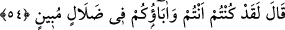

53. Dediler ki: “Biz, babalarımızı bunlara tapar kimseler bulduk.”
“Dediler ki:” Sanki İbrahim (a.s.): “Sizi, bunlara tapmaya sevk eden nedir?” demiş,
onlar da şu cevabı vermişlerdir: “Biz babalarımızı bunlara tapar kimseler bulduk.”
Biz de onlara tâbi olarak bunlara tapmaya devam ediyoruz. Bu ise delil getirmekten âciz
olanların vereceği bir cevaptır.
54. “Doğrusu, siz de, babalarınız da açık bir sapıklık içindesiniz.” dedi.
Yâni Allâh’a andolsun ki ey taklitçiler, siz ve size bu bâtıl yolu açan babalarınız,
büyük bir sapıklık ve herkes için âşikâr olan bir hatâ içindesiniz. Çünkü dayandığınız
hiçbir delil yoktur. Taklid, ancak genel olarak doğru olması muhtemel olan bir hususta
câiz olur. Bâtıl, onu savunanların çok olması sebebiyle hak olmaz. Burada Allâh’ın
rüşdünü verdikleri müstesnâ, hevâya ve dünyaya kul olma konusunda halkın tamamında
taklidin gâlib olduğuna işâret vardır.
Bil ki taklid, hiçbir delil olmaksızın başkasının sözünü kabûl etmektir. Bu, fürû ve
amelî konularda câizdir. Ancak usûlü’d-dîn de ve îtikadla ilgili konularda câiz değildir.
Bilakis bu konularda düşünmek ve istidlâlde bulunmak gerekir. Bununla birlikte Hanefî
ve Zâhirîler’e göre mukallidin îmânı sahihtir. Mukallid, delil aramaksızın âlemin hâdis
(sonradan) olduğuna, onu yoktan var edenin varlığına ve sıfatlarına, peygamberler
gönderdiğine ve onların getirdiklerinin hak olduğuna, hulâsa inanması gerekenlerin
hepsine îman eden kimsedir. Çünkü Nebî (a.s.) bedevîlerin, çocukların, kadınların, köle
ve câriyelerin îmanlarını herhangi bir delil istemeden kabul etmiştir. Fakat mukallid,
kendisine vâcib olduğu için düşünüp delil getirmeyi terk ettiği için günahkâr olur.
Faslül’-hitâb’da şöyle der: “Müslüman diyarda yetişip de kâinattaki mükemmelliği
görerek onu Yaradan’ı tesbih eden kişi, mukallid olmaktan çıkar. Çünkü kâinat
kitabındaki eşsiz sanatların farkına varıp da bunları Yaradan’ı tesbih eden, hakîkî îman
için gereken delilleri bulmuş demektir. Bu tavrıyla sanki o şöyle demektedir: “Bu eşsiz
güzellikleri yaratan Allah’tır. O’ndan gayrısı, bunun benzerini yaratmaya muktedir
olamaz.” İşte bu, eseri müessirin varlığına delil saymak, O’nun sonsuz kudretini,
irâdesini ve diğer sıfatlarını isbât etmektir. Şu halde istidlâlden murâd, ne şekilde
olursa olsun, küçük büyük ayırmadan ve mantık kurallarına göre neticeye varmak için
mukaddimelerin sırasına bakmaksızın eserden müessire, sanattan sanatkâra intikal
etmektir.